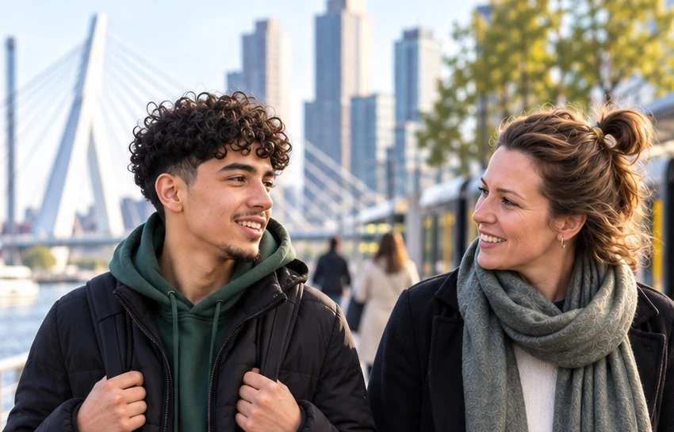

Praktisch en persoonlijk
We willen begrijpen wat er speelt, wat er al wél goed gaat en wat er nodig is om weer stappen vooruit te zetten. Daarom werken we praktisch, persoonlijk en midden in het dagelijks leven. Thuis, op school, tijdens dagbesteding, op het werk of in de eigen leefomgeving.
We bieden structuur waar die ontbreekt, dagen uit waar groei mogelijk is en nemen nooit meer over dan nodig is. We doen het samen, maar niet vóór de jongere. Ons doel is helder: stap voor stap meer grip op het eigen leven, meer verantwoordelijkheid durven dragen en steeds zelfstandiger verder kunnen.
Menselijk, duidelijk en doelgericht
Achter YoungSupport staat een team van doeners en denkers dat gelooft in de menselijke maat.
We kijken verder dan wat er misgaat. Achter vastlopen, afhaken of weerstand zien wij altijd de ruimte voor ontwikkeling. Daarom werken we met duidelijke afspraken, begrijpelijke taal, concrete doelen en ondersteuning die direct aansluit op de realiteit van alledag.
Waar nodig betrekken we ouders, het netwerk, school, de gemeente of andere partners. Niet om de boel ingewikkeld te maken, maar om er samen voor te zorgen dat iedereen rondom de jongere dezelfde kant op beweegt.
Ondersteuning die uiteindelijk minder nodig wordt
Wij geloven niet in langdurige afhankelijkheid. Goede zorg en begeleiding moeten ergens naartoe werken: naar vrijheid.
Daarom stellen we onszelf continu dezelfde kritische vraag:
Wat kan iemand vandaag mét ondersteuning, zodat diegene dat morgen steeds meer zelf kan?
Dat is waar YoungSupport voor staat. Dichtbij blijven wanneer het spannend wordt, ruimte geven zodra het kan, en altijd blijven bouwen aan een echt perspectief.
Neem contact op